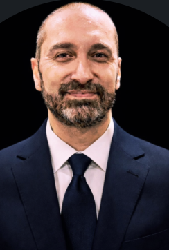

🧾
Faturamento
Automação de faturamento, regras fiscais e otimização de processos de emissão.
Itajaí · Santa Catarina · Brasil
Mais de 20 anos em TI e 15 anos como consultor Protheus. Especialista em integrações REST & SOAP, automação de processos e desenvolvimento ADVPL para os módulos de Faturamento, Financeiro e Estoque/Custos.

Sou Bruno Monteiro, desenvolvedor e consultor ERP Protheus (TOTVS) baseado em Itajaí, Santa Catarina. Formado em Ciência da Computação pela Unimes (Santos), construí minha carreira ao longo de mais de duas décadas em Tecnologia da Informação.
Nos últimos 15 anos me especializei em ADVPL e na arquitetura de integrações robustas — conectando o Protheus a plataformas como o Salesforce via APIs REST e SOAP. Já atuei em empresas multinacionais em Itajaí/SC, resolvendo problemas complexos de faturamento, controle de estoque e finanças.
Meu foco é claro: transformar processos manuais em fluxos automáticos, confiáveis e auditáveis, gerando eficiência real para o negócio.
Onde entrego mais valor no ecossistema TOTVS Protheus.
Automação de faturamento, regras fiscais e otimização de processos de emissão.
Contas a pagar/receber, conciliações e fluxos financeiros integrados.
Controle de estoque, movimentações automáticas e apuração de custos.
Especialidade principal: integrações resilientes entre Protheus e sistemas externos.
Sincronização de dados e processos entre Protheus e a plataforma Salesforce.
Consultas avançadas, performance, tuning e análise direta na base de dados.
Atuação como consultor e freelancer, com foco em integrações REST/SOAP, automação e customizações ADVPL para indústrias e multinacionais.
Consolidação como consultor Protheus, dominando Faturamento, Financeiro e Estoque/Custos em ambientes corporativos exigentes.
Experiência em empresas multinacionais, entregando integrações críticas — incluindo conectividade com Salesforce.
Formação em Ciência da Computação pela Unimes (Santos) e primeiros passos na carreira de TI.
Uma seleção de soluções que desenvolvi e integrei.
Automatização completa do processo de faturamento no Protheus, reduzindo trabalho manual e erros na emissão de documentos.
Integração entre o controle de estoque do Protheus e sistemas externos, mantendo saldos e movimentações sincronizados em tempo real.
Diversas integrações conectando o Protheus ao Salesforce, unificando dados comerciais e operacionais via APIs REST/SOAP.
Construção de web services robustos para expor e consumir dados do Protheus, com tratamento de erros, logs e segurança.
Disponível como consultor e freelancer para novos projetos.
Desenvolvimento de rotinas, telas e regras de negócio sob medida para o seu Protheus.
Conexão do Protheus a ERPs, CRMs e plataformas externas via REST e SOAP.
Eliminação de tarefas manuais em Faturamento, Financeiro e Estoque.
Análise, diagnóstico e melhoria contínua do seu ambiente Protheus.
Tem um desafio no seu Protheus?
Solicitar orçamentoMeu hobby que virou marca.
Fora do mundo dos ERPs, eu vivo uma paixão: bonés e boinas. Dessa paixão nasceu a VORNX — minha marca própria, com o monograma VRX, pensada para quem valoriza estilo sóbrio e qualidade.
A marca está em desenvolvimento e chega ao mercado nos próximos meses.
Em breveAberto a projetos, parcerias e novas oportunidades.